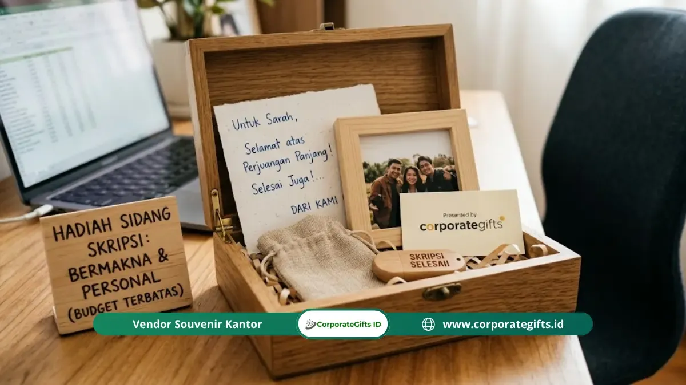

Corporate Gifts ID - Kado sidang skripsi murah yang berkesan di bawah Rp100.000 antara lain kartu ucapan tulis tangan yang tulus, mug personal custom, notebook bersampul estetik, pulpen gel berkualitas, camilan favorit dalam kemasan kraft, hingga lilin aromaterapi mini. Kunci utama dari cinderamata yang membekas di hati bukanlah angka rupiah pada label harga, melainkan ketulusan niat, personalisasi nama, serta kerapian pengemasan yang mencerminkan perhatian mendalam.
Momen mempertahankan skripsi di hadapan dewan penguji adalah puncak dari perjuangan akademik bertahun-tahun. Tekanan mental, malam-malam tanpa tidur, serta revisi berkepanjangan akhirnya terbayar lunas saat status kelulusan diumumkan. Dalam momentum sakral ini, kehadiran sahabat dan kerabat dengan membawa kado apresiasi menjadi penguat moril yang luar biasa berharga.
Banyak mahasiswa merasa gamang karena keterbatasan anggaran saku untuk membeli buket bunga raksasa atau gadget mewah. Padahal, dengan dana mulai dari Rp5.000 hingga Rp80.000, Anda sudah bisa menghadirkan hadiah berkesan yang akan disimpan rapi dan dikenang bertahun-tahun oleh sahabat Anda.
Poin Kunci Panduan Kado Sidang Skripsi Hemat:
- Anggaran Realistis & Terjangkau: Dana di bawah Rp100.000 terbukti sangat memadai untuk merangkai bingkisan kelulusan yang bermakna.
- Kekuatan Sentuhan Personal: Tulisan tangan yang menuturkan kenangan spesifik melipatgandakan nilai emosional sebuah barang sederhana.
- Presentasi Menentukan Persepsi: Kemasan rapi berbahan kertas kraft, pita rami (twine), atau kain pembungkus ala furoshiki mampu mengangkat derajat kado sederhana menjadi tampak elegan.
- Ketepatan Momen Penyerahan: Menyerahkan hadiah persis saat sahabat keluar dari ruang sidang menciptakan asosiasi euforia bahagia yang abadi.
Apakah Kado Sidang Skripsi yang Murah Bisa Benar-Benar Berkesan?
Jawabannya adalah mutlak ya. Relevansi emosional sebuah hadiah tidak pernah diukur dari besaran struk belanja. Dalam studi psikologi relasi interpersonal, penerima kado cenderung mengingat gestur yang terasa dirancang eksklusif bagi kepribadian mereka dibanding barang mahal yang bersifat generik dan impersonal.
Sebuah kartu ucapan tulis tangan yang menguraikan bagaimana Anda menyaksikan ketekunan mereka saat begadang menyelesaikan bab metodologi penelitian sering kali jauh lebih mengharukan daripada kotak kado mewah yang dibeli terburu-buru tanpa pesan personal. Perhatian tulus adalah mata uang tertinggi dalam sebuah apresiasi pertemanan.
10 Rekomendasi Kado Sidang Skripsi di Bawah 100 Ribu
Berikut sepuluh opsi cenderamata kelulusan sidang yang terbukti ramah kantong, memiliki daya tahan fisik yang baik, serta sarat nilai nostalgia:
1. Kartu Ucapan Tulis Tangan dengan Narasi Spesifik
Kartu ucapan adalah kado paling terjangkau dengan dampak psikologis paling mendalam. Pilihlah kartu polos bertekstur tebal (linen atau concord) seharga Rp5.000 hingga Rp15.000. Hindari menuliskan ucapan template klise. Ceritakan satu memori konkret ketika Anda melihat kegigihan mereka, sampaikan alasan spesifik mengapa Anda bangga, dan tuliskan doa tulus untuk babak karier mereka berikutnya.
2. Mug Polos dengan Personalisasi Mandiri
Mug keramik polos putih dapat diperoleh dengan harga Rp20.000 hingga Rp40.000. Anda bisa menghiasinya sendiri menggunakan spidol keramik permanen bertuliskan inisial nama, gelar akademik baru, atau tanggal bersejarah sidang mereka. Melalui teknik memanggang singkat di oven rumahan (bake-on method), tulisan tersebut akan menempel kuat dan menemani rutinitas kopi harian mereka di meja kerja.
3. Notebook Saku dengan Catatan Pembuka di Halaman Pertama
Buku catatan saku bergaris atau dotted dengan sampul menarik seharga Rp15.000 hingga Rp40.000 sangat fungsional untuk menyambut fase pencarian kerja. Tuliskan pesan penyemangat di lembar pertama agar setiap kali sahabat Anda membuka buku tersebut untuk mencatat jadwal interview kerja, mereka teringat pada dukungan Anda.
4. Set Pulpen Gel Berkualitas dari Merek Ternama
Satu atau dua pena gel berkualitas tinggi (seperti seri Pilot G2, Uni-ball Signo, atau Zebra Sarasa) berharga sekitar Rp15.000 sampai Rp35.000 per batang. Pulpen dengan tinta lancar dan grip ergonomis adalah instrumen praktis yang akan sangat berguna saat menandatangani berkas revisi dan dokumen pengesahan dekanat.
5. Camilan Favorit dalam Kemasan Pouch Estetik
Kompilasikan aneka camilan kesukaan sahabat Anda, seperti cokelat batang, keripik artisan, atau cookies rumahan. Masukkan ke dalam kantong kraft bertali rami dengan biaya total Rp50.000 hingga Rp80.000. Camilan manis ini sangat ampuh mengembalikan energi dan kadar gula darah mereka yang terkuras pasca mempertahankan argumen skripsi.

Sentuhan pita rami, kertas kraft, dan kartu ucapan tulisan tangan mengubah hadiah sederhana menjadi cenderamata kelulusan yang berkelas.
6. Kopi Single Origin atau Teh Herbal Artisan
Beberapa sachet drip bag coffee arabika atau pilihan loose-leaf artisan tea dalam amplop vintage kecil bisa disiapkan dengan budget di bawah Rp50.000. Hadiah ini menghadirkan pengalaman relaksasi yang sempurna bagi mahasiswa yang baru saja lepas dari kepungan revisi dosen pembimbing.
7. Lilin Aromaterapi Mini Produksi UMKM Lokal
Scented candle mini beraroma lavender, vanila, atau sandalwood banyak diproduksi oleh UMKM lokal dengan kisaran harga Rp25.000 hingga Rp60.000. Hadiah ini membawa pesan simbolis agar sahabat Anda meluangkan waktu beristirahat dan memanjakan diri setelah masa-masa tegang ujian.
8. Gantungan Kunci Custom Akrilik Bertuliskan Nama
Gantungan kunci berbahan akrilik atau kayu ukir bertuliskan nama lengkap beserta inisial gelar baru dapat dipesan secara daring dengan biaya sekitar Rp20.000 hingga Rp35.000. Benda mungil ini akan selalu menempel pada kunci kamar kos atau resleting tas kerja mereka.
9. Tangkai Bunga Segar Minimalis
Alih-alih memesan standing bouquet raksasa yang mahal dan cepat layu, pilihlah satu atau dua tangkai bunga matahari (sunflower) atau gerbera segar seharga Rp15.000 hingga Rp45.000. Bunga matahari melambangkan optimisme dan keceriaan menyambut gerbang masa depan.
10. Postcard Custom dengan Bingkai Foto Kayu Minimalis
Cetaklah selembar foto kenangan masa awal kuliah bersama atau kartu kutipan motivasi favorit mereka dalam ukuran 4R, lalu pasang di bingkai kayu minimalis seharga Rp25.000 hingga Rp45.000. Pajangan ini akan menjadi dekorasi meja yang manis dan penuh memori persahabatan.
Tabel Kisaran Harga & Sentuhan Personalisasi
Tabel rangkuman berikut memudahkan Anda memetakan alokasi biaya dan detail personalisasi yang disematkan pada setiap pilihan kado:
| No | Pilihan Kado Sidang | Estimasi Biaya | Sentuhan Personalisasi yang Memikat |
|---|---|---|---|
| 1 | Kartu Ucapan Tulis Tangan | Rp5.000 - Rp15.000 | Penulisan momen spesifik & harapan dari hati |
| 2 | Mug Keramik Polos Custom | Rp20.000 - Rp40.000 | Spidol permanen bake-on atau stiker vinyl nama |
| 3 | Notebook Saku Estetik | Rp15.000 - Rp40.000 | Pesan selamat & tanda tangan di lembar awal |
| 4 | Set Pulpen Gel Premium | Rp15.000 - Rp35.000/pcs | Warna tinta atau bodi kesukaan penerima |
| 5 | Pouch Camilan Favorit | Rp50.000 - Rp80.000 | Seleksi snack favorit dalam kantong kraft bertali rami |
| 6 | Drip Bag Coffee / Artisan Tea | Rp25.000 - Rp50.000 | Amplop vintage berpita & ucapan rehat sejenak |
| 7 | Lilin Aromaterapi Mini | Rp25.000 - Rp60.000 | Varian aroma relaksasi kesukaan sahabat |
| 8 | Gantungan Kunci Nama | Rp20.000 - Rp35.000 | Ukiran inisial nama dan gelar akademik baru |
| 9 | Tangkai Bunga Matahari Segar | Rp15.000 - Rp45.000 | Pita kain satin & kartu ucapan mini |
| 10 | Foto Kenangan Berbingkai Kayu | Rp25.000 - Rp45.000 | Kompilasi potret perjuangan kuliah bersama |
Cara Memilih Kado yang Tepat Berdasarkan Persona
Agar hadiah tidak berakhir sia-sia, luangkan waktu memetakan profil penerima melalui tiga pertanyaan pemandu sederhana:
- Apa yang paling mereka butuhkan saat ini? Mahasiswa yang langsung merencanakan melamar kerja akan sangat menghargai buku catatan dan pulpen berkualitas. Sebaliknya, teman yang kelelahan fisik akan lebih bersyukur menerima camilan manis dan lilin aromaterapi penenang.
- Apa hobi atau minat personal mereka? Jika sahabat Anda penikmat seduhan kopi sejati, memberi satu bungkus drip coffee bag dari roastery lokal akan terasa seratus kali lebih berkesan dibanding cangkir biasa.
- Memori bersama apa yang bisa diabadikan? Menyisipkan lelucon internal (inside jokes) atau momen konyol saat praktikum laboratorium akan memicu gelak tawa bahagia saat kado dibuka.
Seni Packaging Sederhana agar Terlihat Mewah
Kemasan memegang peranan separuh dari impresi awal. Kado seharga Rp20.000 yang dibungkus dengan estetika rapi akan tampak jauh lebih berharga daripada barang mahal yang diserahkan begitu saja dalam kantong kresek minimarket.
Terapkan tiga trik pengemasan berbiaya rendah namun bercita rasa tinggi berikut:
- Gunakan Material Bernuansa Alami: Kotak kardus kraft cokelat, paper bag daur ulang, atau kertas roti berpadu sempurna dengan tali rami goni (hemp twine) seharga beberapa ribu rupiah.
- Sentuhan Daun Kering atau Pita Satin: Selipkan setangkai daun pakis kering, baby breath, atau segel stiker lilin (wax seal) pada simpul pita untuk memunculkan kesan rustic yang anggun.
- Serahkan pada Momentum Emas: Tunggulah di luar gedung sidang dan serahkan kado sesaat setelah pintu ruang ujian dibuka dan pengumuman yudisium dibacakan. Ekspresi lega dan haru sahabat Anda akan melipatgandakan nilai hadiah tersebut.
Pertanyaan Seputar Kado Sidang Skripsi (FAQ)
Kesimpulan dan Apresiasi Kelulusan
Keterbatasan finansial bukanlah penghalang untuk mengutarakan rasa bangga kepada sahabat yang telah menuntaskan sidang skripsi. Dengan modal perhatian tulus, pemilihan barang fungsional, dan kemasan kreatif berkonsep rapi, kado di bawah Rp100.000 terbukti mampu menciptakan kenangan emosional yang tak lekang oleh waktu.

Ditulis oleh: Arinda Zakia
Senior Corporate Gifting SpecialistPraktisi pengadaan cenderamata korporat dan konsultan merchandise B2B di CorporateGifts.ID. Berpengalaman mengkurasi cinderamata edukasi akademik, etika cinderamata institusi pendidikan tinggi, serta efisiensi anggaran suvenir di Indonesia.
Lihat Profil Lengkap & Panduan Lainnya